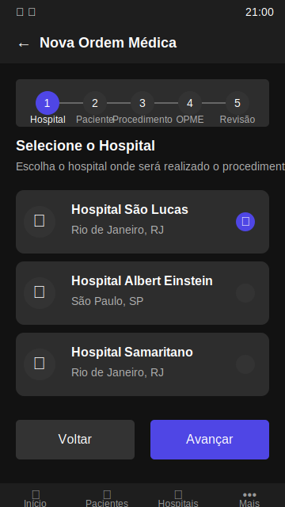

Tela Inicial
Tela principal com acesso rápido às funcionalidades e atividades recentes.
Ver em tela cheiaDetalhes do Paciente
Perfil completo com histórico médico e documentos do paciente.
Ver em tela cheiaDigitalização de Documento
Interface da câmera para captura de documentos médicos.
Ver em tela cheiaResultado da Digitalização
Tela que mostra o documento digitalizado e o texto extraído por OCR.
Ver em tela cheia
